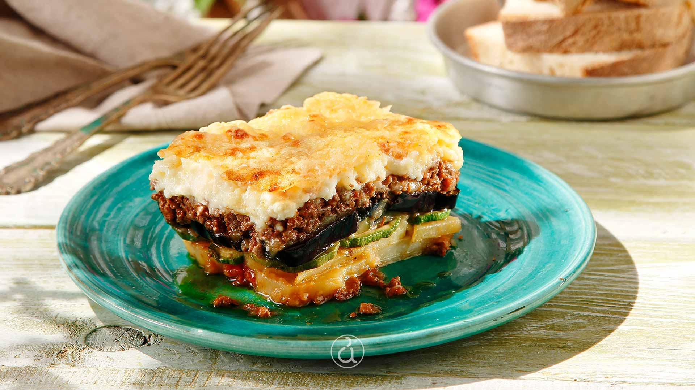

Mousakas

Description
Mousakas is a layered oven casserole dish made with vegetables and meat.
The most well-known version of Mousakas is made with layers of eggplant slices,
cheese, and a meat sauce, topped with a thick béchamel sauce; however, other
favorites call for potatoes, zucchini, or a combination of vegetables.
More recently, a meatless (vegetarian) version has also become widely available.
Until the early 1900s, Mousakas was a more simple dish, using just vegetables and meats.
The addition of béchamel sauce is attributed to Nikos Tselementes, a Greek chef who trained
in France, and this newer version quickly became a favorite in Greece.
Ingredients
Base ingredients
- 6 eggplants
- 5 potatoes
- vegetable oil
For the meat sauce
- 750g beef or lamb mince
- 2 red onions (chopped)
- 2 cloves of garlic (chopped)
- 1 tin chopped tomatoes (400g)
- 2 tbsp tomato paste
- 1 teaspoon sugar
- 1 glass of red wine
- Pinch of sea salt and freshly ground black pepper
- 1 bay leaf
- 3-4 whole cloves
- A pinch of cinnamon or one cinnamon stick
- 1/4 of a cup olive oil
For the bechamel sause
- 900ml milk
- 120g butter
- 120g flour
- a pinch of nutmeg
- 2 egg yolks
- 100g Parmigiano-Reggiano or Kefalotyri or your favourite hard cheese
- salt to taste
Steps
- Preparing the Mousakas eggplants (aubergines) and potatoes
- Preparing the lamb or beef tomato sauce
- Preparing the béchamel sauce
- Assembling it and baking it until perfectly golden brown
Return to Odin Recipies